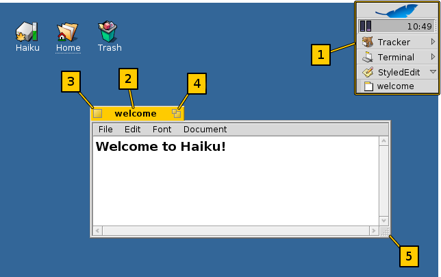
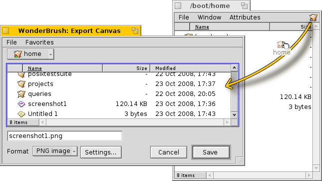
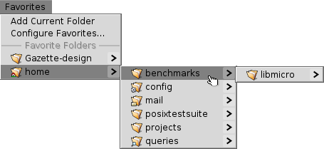

Haiku's graphical user interface is an integral part of the system. Unlike Unix-based operating systems, there's no separate window manager and booting just into a command line shell is not possible. Haiku's focus being on the desktop user, this is just not considered necessary.
As you probably have experience with other graphical environments, let's skip over the standards like menus, right-click context menus, drag&drop etc. Let's have a look at the few unique aspects of Haiku's GUI instead.
There are only a few things in Haiku's GUI that aren't obvious and deserve an explanation.
The Deskbar is Haiku's "Start" menu and taskbar, if you will. See topic Deskbar.
- The yellow tab offers more than just a program's name or a document's filename:
- You can move it by holding the SHIFT key while dragging it to another position, enabling you to stack a number of windows and conveniently access them by their named tab.
- You minimize a window with a double-click on its tab (or with CTRL ALT M). A such hidden window can be accessed by its entry in the Deskbar or the Twitcher.
- You can send a window to the back with a right-click on its tab (or its border).
The close button.
The "alternative size" button (or CTRL ALT Z). In most applications, this will expand a window to maximum size. It doesn't have to, however. Tracker windows, for example, will resize to best fit the contents.
The resize corner. Dragging anywhere else on a window's border will move the window.
Open and save panels

When opening or saving a file from any application, a panel like this opens:
It has all the usual things: A list of files of the current folder to choose from, in case of a save panel, a text field to enter a filename and a drop-down menu for different file formats and their settings.
You can enter parent folders with the drop-down menu above the file listing.
If you already have a Tracker window with the location for a file open, you can simply drag either any file or the folder-representation (i.e. the symbol to the far right in its menu bar) into the panel. This changes the panel to that new location.
Keyboard shortcuts
You can use many of the shortcuts also used in Tracker. Besides the commands that are also available through the menu, there are a few not that obvious:
| ALT N | Creates a new folder. | |
| ALT E | Lets you rename the selected entry. | |
| ALT ↑ | Opens the parent folder. | |
| ALT ↓ or ENTER | Opens the selected folder. | |
| ALT D | Takes you to your Desktop. | |
| ALT H | Takes you to your Home folder. |
Favorites and recent folders
The menu provides recently visited folders and favorite locations that you can set up yourself. As indicated by the little arrow, you can also use these locations to navigate further down the hierarchy via submenus.
To add a Favorite, you simply navigate to your destination and choose . From now on it will appear in every open/save panel. To remove a Favorite, choose and delete its entry.
All Favorites are kept in /boot/home/config/settings/Tracker/Go/. So you might as well add and remove links to files and folders there directly.